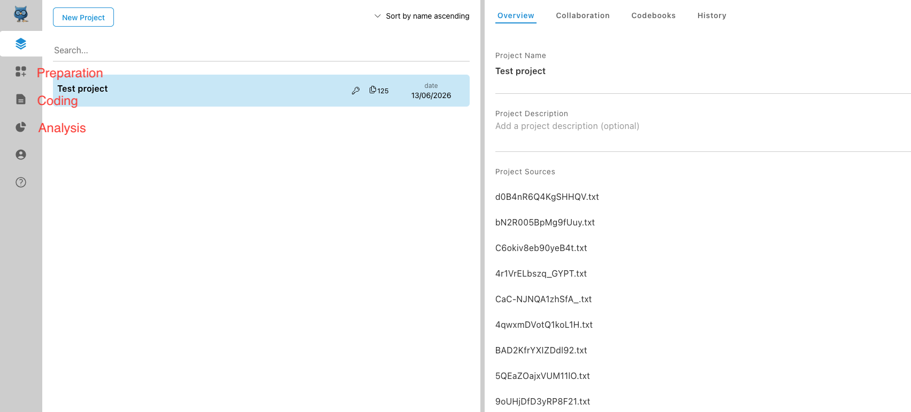
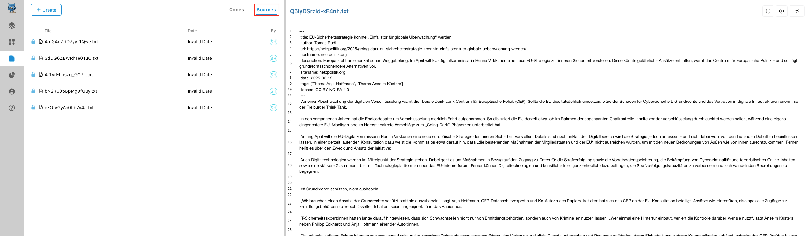
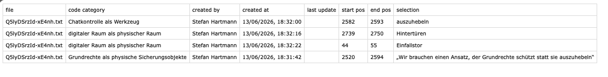
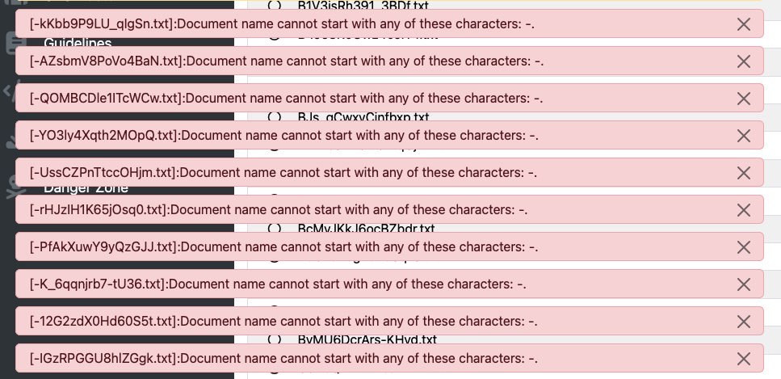
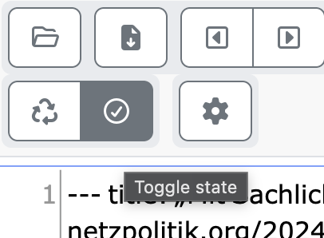

Die oben skizzierte Herangehensweise hat den Nachteil, dass sie viel manuelle Arbeit erfordert. Mit einigen Grundkenntnissen im Bereich Programmierung und vor allem regulären Ausdrücken lässt sich jedoch vieles davon automatisieren. Im Folgenden erstellen wir zunächst eine Link-Liste in R und crawlen die einzelnen Einträge in dieser Liste dann mit Trafilatura. Im Folgenden kann ich keinen Einstieg in R geben und verweise stattdessen auf die Vielzahl bereits existierender Ressourcen, biete aber dennoch hoffentlich ausreichende Erklärungen, um auch für Einsteiger:innen transparent zu machen, was die einzelnen Codezeilen tun.
Tip
Zum Einstieg in R gibt es viele sehr empfehlenswerte Tutorials und frei verfügbare Bücher. Besonders empfehlenswert ist die aktuelle Einführung von LeFoll (2026); auch die LADAL-Tutorials von Martin Schweinberger eignen sich gut zum Einstieg.
6.0.1 Link-Liste erstellen
Bereits oben haben wir netzpolitik.org nach dem Schlagwort “Chatkontrolle” durchsucht und gesehen, dass (Stand Juni 2026) 493 Artikel gefunden werden. Jeden einzelnen dieser Artikel händisch zu copy&pasten, wie wir es oben getan haben, wäre sehr aufwändig und ist glücklicherweise auch nicht nötig, denn wir können z.B. das Tool Trafilatura Barbaresi (2021) nutzen, um auch größere Mengen an Websites zu crawlen. Dafür brauchen wir jedoch zunächst eine Link-Liste. Die können wir zusammenstellen, indem wir die Ergebnisse unserer Suche nutzen.
Den Link zu jedem einzelnen der 493 Ergebnisse manuell in eine Liste zu copy&pasten, wäre aber ähnlich aufwendig, wie alle Texte händisch zu kopieren. Stattdessen können wir in R ein Skript schreiben, das das für uns übernimmt. Der folgende Code ist natürlich spezifisch für netzpolitik.org, aber die einzelnen “Bausteine” lassen sich auch auf andere Websites übertragen.
Für Anfänger:innen mag der Code auf den ersten Blick komplex und undurchschaubar wirken, er basiert aber auf einer Reihe sehr einfacher Beobachtungen:
Die erste Ergebnisseite hat die URL https://netzpolitik.org/?s=Chatkontrolle, alle weiteren Ergebnisseiten haben die URL https://netzpolitik.org/page/i/?s=Chatkontrolle, wobei i für die jeweilige Seite steht (2, 3, 4 etc.).
Da es 493 Treffer gibt und pro Seite (manuell nachgezählt) 20 Treffer angezeigt werden, muss es 493/20 = 24.65 = aufgerundet 25 Ergebnisseiten geben.
Ein Blick in den Quelltext zeigt, dass die Links zu den einzelnen Artikeln in den Ergebnissen immer folgendes Format haben: https://netzpolitik.org/jahr/titel. Die Strings, die diesem Muster entsprechen, müssen wir also aus den Ergebnisseiten extrahieren. Das wird dadurch erleichtert, dass es zwar noch andere URLs in den Quelltexten der Ergebnisseiten gibt, bei denen jedoch durchweg auf https://netzpolitik.org/ alphabetische und nicht numerische Zeichen folgen.
Wir müssen also zunächst die 25 Ergebnisseiten crawlen und aus diesen Ergebnisseiten dann die Strings herausziehen, die dem Muster https://netzpolitik.org/, direkt gefolgt von numerischen Zeichen, entsprechen. Der folgende R-Code tut genau dies:
# einen leere Liste erstellenl <-list()# über die Ergebnisliste iterierenfor(i in1:25) {if( i ==1) { l[[i]] <-readLines("https://netzpolitik.org/?s=Chatkontrolle") } else { l[[i]] <-readLines(paste0("https://netzpolitik.org/page/", i,"/?s=Chatkontrolle", collapse ="")) }Sys.sleep(time =sample(1:10, 1))} # Liste in Vektor überführenl <-unlist(l)# Links extrahierenfind_links <-grep("<a href=\"https://netzpolitik.org/[0-9].* ", l)l1 <- l[find_links]# Elemente vor und nach dem eigentlichen Link ersetzenl1 <-trimws(gsub("<a href=\"", "", l1))l1 <-gsub("\".*", "", l1)# Duplikate entfernenl1 <-unique(l1)# Linkliste exportierenwriteLines(l1, "materialien/linkliste.txt")
1
wir wissen, dass es 25 Ergebnisseiten geben muss, weil pro Seite 20 Einträge angezeigt werden und es 493 Ergebnisse gibt
2
Ab der zweiten Ergebnisseite muss bei der URL die /page-Erweiterung angegeben werden, die für die erste Seite noch entfällt. Mit diesem if-Statement stellen wir sicher, dass die erste Ergebnisseite entsprechend anders behandelt wird als die folgenden.
3
die i-te Ergebnisseite wird als i-tes Element der Liste hizugefügt.
4
mit Sys.sleep können wir einen kurzen Abstand zwischen den Anfragen einbauen, was bei der Abfrage von größeren Datenmengen sinnvoll sein kann, um die Server zu schonen
5
Dieser Befehl überführt die Liste in einen Vektor, der anschließend weiter verarbeitet werden kann.
6
Eine manuelle Inspektion des Quelltexts zeigt, dass alle Links mit https://netzpolitik.org/ beginnen, gefolgt von einer Zahl - Letzterem tragen wir mit dem regulären Ausdruck [0-9] Rechnung. Dieser grep-Befehl sucht also alle Elemente in unserem Vektor, in denen dieses Link-Muster zu finden ist.
7
Hier wird das Subset unseres Vektors mit allen Elementen erstellt, die das eben gesuchte Muster enthalten.
8
In dieser und der folgenden Zeile werden alle Elemente vor und nach dem eigentlichen Link gelöscht. trimws steht für “trim whitespace”; diese Funktion entfernt Leerzeichen am Anfang und am Ende des Strings.
9
Viele Links treten im gecrawlten Quelltext mehrfach auf, deshalb werden sie hier dedupliziert.
10
Dieser Befehl schließlich exportiert die Links in eine Linkliste.
Das Ergebnis des Codes ist die Linkliste, die im Textdokument linkliste.txt gespeichert ist.
6.0.2 Crawlen mit Trafilatura
Als nächstes können wir die Linkliste als Input für Trafilatura nutzen. Trafilatura ist eine Python-Programmbibliothek, die man aber auch einfach übers Terminal aufrufen kann. Es gäbe zwar auch R-Libraries, die einen ähnlichen Zweck erfüllen, z.B. rvest, aber Trafilatura hat den Vorteil, dass es viele Prozessierungsschritte automatisch erledigt, die wir andernfalls manuell erledigen müssten (z.B. die Entfernung von Boilerplate-Text). Wenn Trafilatura korrekt installiert ist, genügt folgender Terminal-Befehl, um die Daten zu crawlen:
-i (Input) gibt an, wo die Datei mit der Link-Liste liegt, die gecrawlt werden soll;
-o (Output) gibt an, wo die Ergebnisse gespeichert werden sollen;
--with-metadata gibt an, dass die gespeicherten Dateien auch Metadaten enthalten sollen (z.B. Datum);
--formatting gibt an, dass die Dateien auch Informationen zur Formatierung enthalten sollen (z.B. bei welchen Textstrings es dich um Überschriften handelt);
--output-format gibt an, dass wir die Dateien als Rohtextdateien (.txt) haben möchten.
6.0.3 Annotation in dezidierter Annotationssoftware
Wärend wir im Quick&Dirty-Ansatz noch alle relevanten Segmente manuell aus den Daten herauskopiert haben, können wir sie dank entsprechender Software auch in eigens für solche Zwecke entwickelter Annotationssoftware mit Annotationen versehen. In der qualitativen Forschung ist das kommerzielle Tool MAXQDA nach wie vor der sprichwörtliche Platzhirsch; tatsächlich ist es von der Benutzerfreundlichkeit und Funktionsvielfalt her das wahrscheinlich einsteigerfreundlichste Tool, und viele Universitäten oder Institute haben Lizenzen dafür. Inzwischen gibt es aber erfreulicherweise auch kostenlose und quelloffene Alternativen, auf die wir uns hier beschränken wollen.
6.0.3.1 OpenQDA
Die niedrigschwelligste und einfachste Option ist derzeit wohl OpenQDA, das online verwendbar und denkbar einfach zu bedienen ist. Hier können wir zunächst ein neues Projekt erstellen. Links sehen wir eine Sidebar, in der verschiedene Optionen verfügbar sind; die Schritte “Preparation”, “Coding” und “Analysis”, die hier ausgewählt werden können…

OpenQDA-Workflow-Sidebar.
… müssen wir nun nacheinander abarbeiten.
Nach Import der über Trafilatura gecrawlten Dateien können wir diese im “Preparation”-Tab theoretisch weiter bearbeiten, was wir aber an dieser Stelle nicht wollen – wir wollen direkt in die Kodierung einsteigen. Um ein Dokument kodieren zu können, müssen wir es zuerst für die weitere Textbearbeitung sperren (“Lock for Coding”), was im Preparation-Tab geschieht:
Der Lock-for-Coding-Button in OpenQDA.
Wenn wir im Folgenden auf “Confirm” klicken, werden wir direkt in den Coding-Tab weitergeleitet, wo wir das Dokument nun bearbeiten können und wo wir links unter “Sources” zwischen allen Dokumenten wählen können, die wir bereits für die Kodierung freigegeben haben (bei mir sind das im folgenden Screenshot schon ein paar mehr).

Coding-Ansicht von OpenQDA mit Sources-Auswahl
Nun können wir erste Annotationen vornehmen, indem wir einzelne Wörter oder Spannen im Text markieren, worauf am oberen rechten Rand ein “Menu”-Button erscheint, auf den wir klicken können, um mit “Create new in-vivo-Code” einen neuen Code zu erstellen. Einen einmal erstellten Code können wir für andere Textsegmente auch wiederverwenden: sobald wir einen Code erstellt haben, steht er bei weiteren Annotationen im Auswahlmenü zur Verfügung
Beispiel für Kodierungen (Annotationen) in OpenQDA.
Wenn wir mit den Annotationen fertig sind, können wir die annotierten Segmente mit den Annotationen auch im CSV-Format exportieren. Dafür müssen wir in den “Analysis”-Tab wechseln. Die Option “Export to CSV” ist zunächst ausgegraut, weil wir zuerst eine Option im Dropdown-Menü “Select a visualization” wählen müssen.
CSV-Export in OpenQDA
Das resultierende Spreadsheet ist ganz ähnlich wie Figure 5.2 oben, auch wenn die zusätzlichen Spalten, die wir dort hinzufügen konnten, hier natürlich fehlen – bei Bedarf können wir sie noch manuell in einem Tabellenkalkulationsprogramm ergänzen.

Das Spreadsheet, das aus den oben vorgenommenen Annotationen resultiert.
6.0.3.2 INCEpTION
INCEpTION ist ein vielseitiges Annotationstool, das einen deutlich größeren Funktionsumfang bietet als OpenQDA, aber auch anspruchsvoller ist. Es ist vor allem für serverbasierte Nutzung ausgelegt, man kann es aber auch auf dem eigenen Rechner verwenden. Sofern man Java installiert hat, genügt es in der Regel, die auf der Website verfügbare .jar-Datei herunterzuladen und zu öffnen. INCEpTION öffnet sich dann in Ihrem Browser, wo Sie bei der ersten Verwendung zunächst ein Admin-Passwort vergeben müssen.
Achtung!
Notieren Sie sich unbedingt das Admin-Passwort, das Sie vergeben. Für die lokale Nutzung gibt es naheliegenderweise keine Password-Reset-Option.
Anschließend können wir ein neues Projekt erstellen – hier verwenden wir die Option “Classic linguistic project” (wir könnten aber auch einfach ein “Blank project” erstellen). Nun können wir über die Importfunktion die über Trafilatura gecrawlten Dateien einlesen.
Hinweis
Beim Einlesen der von Trafilatura gecrawlten .txt-Dateien kann es aufgrund der Dateinamen, die Trafilatura vergibt, zu einer Fehlermeldung kommen:

Fehlermeldung in INCEpTION beim Datenimport
Wie aus der Fehlermeldung klar hervorgeht, akzeptiert INCEpTION keine Dateinamen, die mit - anfangen. Zum Glück können wir die Dateinamen über einen einfachen Terminal-Befehl relativ schnell ändern. (Transparenzhinweis: Die beiden Befehle wurden mit Hilfe von ChatGPT erstellt.)
Um die Befehle anzuwenden, müssen wir zunächst mit dem cd-Befehl in das entsprechende Verzeichnis navigieren. Anschließend sollten Sie die Befehle einfach copy&pasten und ausführen können.
In Mac (zsh):
for f in -- -*; do [[ -e "$f" ]] || continue mv -- "$f" "x$f"done
Erstellung eines neuen Projekts und Datenimport in INCEpTION
Bevor wir mit der Annotation loslegen können, müssen wir einen entsprechenden Annotations-Layer kreieren. In der Sidebar links sehen wir die Option “Layers” (falls Sie die Sidebar nicht sehen können: Sie befindet sich im “Settings”-Menü des Projekts), wo wir einen neuen Layer anlegen können.
Der Screencast in Figure 6.1 zeigt, wie das Anlegen eines neuen Annotations-Layers aussehen kann. Folgende Entscheidungen habe ich im Beispiel in Figure 6.1 getroffen:
Die “granularity” habe ich auf character-level gesetzt. Das bedeutet, dass wir nicht nur ganze Wörter markieren können, sondern auch einzelne Wortbestandteile. In einigen Fällen kann das nützlich sein, etwa wenn wir nur einzelne Kompositionsglieder in einem Kompositum annotieren möchten.
Ich erlaube Überlappungen und “Stacking”, die per Default ausgeschlossen sind. Das bedeutet, dass sich Annotationsspannen überlappen können, dass also z.B. demselben Wort (oder einer größeren Spanne) mehr als eine Annotation zugewiesen werden kann. Im Beispiel weiter unten in Figure 6.2 mache ich davon auch Gebrauch.
Mit der “Remember”-Option stelle ich sicher, dass einmal vergebene Tags wiederverwendet werden können.
Figure 6.1: Erstellung eines neuen Annotations-Layers in INCEpTION
Sobald der Layer erstellt ist, kann die eigentliche Annotation beginnen. Dafür müssen wir zunächst auf “Dashboard” klicken, dann auf “Annotation” und ein Dokument zum Annotieren auswählen. Nun können wir einzelne Spannen im Text markieren.
Figure 6.2: Annotation in INCEpTION
Tip
In den obigen Beispielen wurde bei der Annotation ein eher induktiver Ansatz gewählt, bei der die Annotationskategorien quasi bottom-up aus den Daten heraus entwickelt werden. Es kann aber in vielen Fällen auch sinnvoll sein, mit einem bestehenden, finiten Inventar an Annotationskategorien, einem sogenannten Tagset, zu operieren; INCEpTION erlaubt im “Settings”-Menü das Erstellen oder Importieren von Tagsets. Tagsets können auch erweiterbar sein (auch hier kann man in INCEpTION einstellen, ob das erlaubt sein soll oder nicht). Im Fall der Metaphernannotation könnte man beispielsweise mit der online verfügbaren “Master Metaphor List” von George Lakoff und Kolleg:innen als Tagset arbeiten und dieses bei Bedarf noch erweitern, wenn man auf Metaphern stößt, die sich damit nicht gut abbilden lassen.
Ein einfacher CSV-Export ist in INCEpTION leider nicht möglich (hier wird allerdings ein Workaround vorgestellt); dafür lassen sich die Annotationen am Ende im “Curation”-Tab quasi alle zusammen anschauen, was für die qualitative Auswertung auch hilfreich sein kann (um ein Dokument im “Curation”-Tab sehen zu können, muss allerdings die Annotation zunächst abgeschlossen werden - dafür muss man auf den “Toggle State”-Button klicken, der wie ein Häkchen aussieht und das Dokument in den Read-only-Modus überführt.)

Toggle-State-Button in INCEpTION
Barbaresi, Adrien. 2021. “Trafilatura: A Web Scraping Library and Command-Line Tool for Text Discovery and Extraction.” In.
LeFoll, Elen. 2026. Data Analysis for the Language Sciences. A Very Gentle Introduction to Statistics and Data Visualization in R. https://elenlefoll.github.io/RstatsTextbook/.